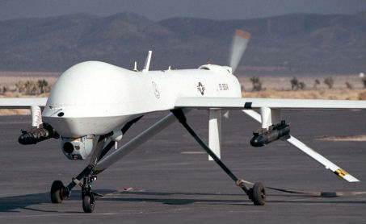
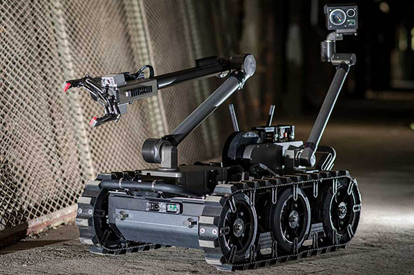
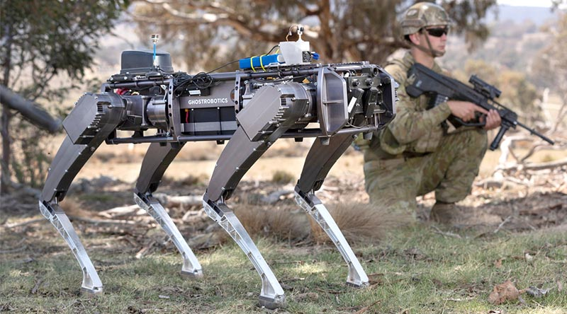
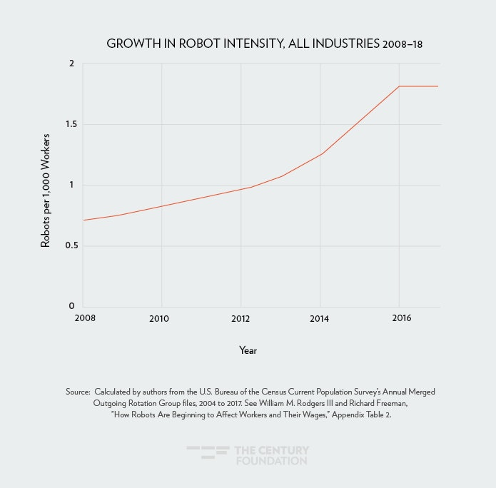
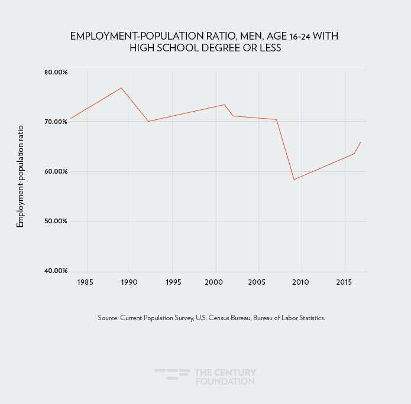

Robots are machines that resemble human being or animals and replicate certain movement and functions and mainly used for repetitive tasks that are considered dangerous for humans.
In 1954 George Devol created the first programmable and digitally operated called the Unimate that later laid the foundation of our modern robotic industry, six years later General Motors bought the Unimate and installed in their New Jersey plant to lift hot pieces of metals and ever since robots have been used in manufacturing and transportation.
In the 1970s a robot with six electromechanical driven axes was patented in Germany and the programmable universal manipulation arm was invented. Robots are used industrial and commercial for their speed, accuracy, reliability and their cost effective in terms of labour and to do dangerous and heavy lifting that are not suitable for humans.
Robots has also been used in hospitals, state of the art medical robots recently have been developed and implemented in hospitals in the United States and they are the Da Vinci Surgical Robot that gives surgeons precise control over the procedure, The Xenen Germ-Zapping Robot that disinfect an entire hospital rooms, Therapeutic robot that helps patient in recovery, the TUG robot that carry meals and other supplies around hospital and a CyberKnife robotic surgery system that delivers radiation to tumors and its been used to treat cancer patients.
Automated Dispensing System or Robotic Pharmacy are been used in many hospitals and in particular a hospital in Sydney launched a state of the art robotic pharmacy, helping in eliminating human errors and reducing workload on stuff and especially with the covid-19 outbreak robots have been used for contactless cashiers and delivering packages like Ford, Amazon and even Dominos pizza recently rolled out their pizza delivery robots. The covid-19 pandemic has created a high demand for contactless delivery robots
The US military in recent days has launched its first robotic warship and it fired its first missile, the US military current robots are: Military transportation Robots, Search and Rescue Military Robots, Fire fighting Military Robots, Mine Clearance Military Robots, Surveillance and Reconnaissance Military Robots, Armed Military Robots, Unmanned Aerial Vehicle (UAV) Robots, Unmanned Ground Vehicles (UGV) Robots, Unmanned Underwater Vehicle (UUV) Robots.
  (Source:Robotics247.com)
Also in recent months in the 2020 Tokyo Olympics, a Japanese robot basketball player shooting basketballs hoops from the centre of the court at half time of USA vs. FRANCE game.
Tesla is building a robot called Optimus that will eliminate dangerous and repetitive tasks and it will respond to the voice command of their owners.
In the near future robots will be used in humanitarian and disaster relief and rescue and consist of extending aid to victims of natural and man made disasters and conducting evacuation where robots have the capabilities of executing complex tasks in dangerous environments. Robots present and future developments are: Industrial Robot, Service Robot, Biological and Medical Applications, Networked Robot, Military, Humanoid Robotics and many more
Robots have changed our lives for the better but at same time it’s threating to take jobs away from humans, super market giants Coles and Woolworth are investing in what is called Smart warehousing and distribution systems where traditional warehousing is been replaced and thousands of jobs will be lost, Coles is scheduled to open two data-driven centres in Melbourne and Sydney in 2022 where autonomous picking robots will retrieve items for human worker who will scan and pack them for delivery, with Robots been in every aspect of our life its bound to take jobs from factories and warehouses due to low cost on labour.
Singaporean government has launched Xavier their first police aid robot, Xavier is an autonomous wheeled vehicle with a camera array mounted on top to detect nuisance crimes and then send it to a command and control centre where humans will decide what to do.
With the covid-19 outbreak more and more jobs will be lost to robots, whether in delivering packages, pick and packing items in warehouses or welding metals in factories the need for robots is increasing.
Research in the US shows from 1990 to 2007 thirteen manufacturing industries and six nonmanufacturing industries increased the use of robots, the research shows that one more robot per one thousand workers reduces the nation’s employment-to-population ratio by about 0.18 to 0.34 percentage points and lowered wages by 0.25 to 0.50 percent.
Robots technologies are growing fast in many aspects of our lives.
Growth In Robot
Employment-population Ratio
The effect of robots is mainly in manufacturing and specifically in the automotive industry, robots has been adopted in the automotive mare than any other industry, employing 38% of existing robots with adoption of up to 7.5 robots per one thousand workers.
Robots are most likely to affect routine manual occupation in lower and middle class workers, in some part of the US the adoption of robots are relatively small but in other parts of the US robots have been adopted more along the order of two to five robots per one thousand workers.
They have a mixed effect on us where some robots are taking jobs from humans that are relatively high wages where human employees used to perform in manufacturing to making corporation more efficient and more productive.
At the end from all these Si-Fi movies we have seen whether Terminator, RoboCop, i,Robot or Chappie the one common things they share is robots and humans will clash at some point.